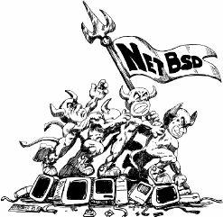
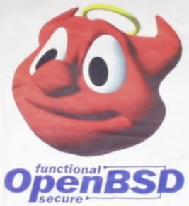

Введение в демонологию или сколько BSD-систем может уместиться на
PC
Автор: Алексей Федорчук,
[email protected]Опубликовано:
16.03.2002
Оригинал: http://www.softerra.ru/freeos/16733/
Когда речь заходит о BSD-системах – ветки Unix,
порожденной неуемным воображением исследователей из Университета Беркли, – на
память сразу же приходит FreeBSD. Система эта прочно окопалась на изрядной части
web-серверов всего мира (да и России тоже). Однако она – далеко не единственный
представитель этого славного семейства.
Если рассматривать вопрос в исторической
последовательности, рядом с FreeBSD (а возможно, и впереди нее) следует
поставить NetBSD. Оба эти проекта преследовали целью создание истинно открытой и
свободной Unix-системы [1], оба вышли, как
из гоголевской шинели, из берклиевских систем линии 4.xBSD, оба стартовали
практически одновременно (в начале 90-х годов прошлого столетия), да и первые их
релизы с небольшим разрывом (NetBSD – начало 1993 г., FreeBSD – ее конец).
Однако это – существенно разные системы.
FreeBSD изначально создавалась как порт системы
4.4BSD для самой демократичной и распространенной платформы – iX86 (или IBM
PC-совместимых компьютеров, как их тогда задумчиво называли). Версия для Alpha –
вторична (и, видимо, скоро прекратит свое существование ввиду грядущей кончины
платформы). Соответственно, при разработке этой системы преследовались две
основные цели – оптимизация под конкретную архитектуру и простота использования
PC-юзерами, каковые, вероятно, молчаливо подразумевались тупой массой погрязших
в предрассудках DOS/Windows (версии последней уже начали свое триумфальное
шествие по винчестерам пользователей [2]).
Надо сказать, что цели своей создатели FreeBSD
добились – система получилась быстрой, надежной и, не побоюсь этого слова,
простой в использовании (после должного изучения, конечно). И вообще, если в
компьютерном мире и можно к чему-нибудь применить известный слоган «сделано с
умом», то это – именно FreeBSD. Впрочем, на эту тему сказано вдоволь, в том
числе – и на этих страницах.
В отличие от FreeBSD, NetBSD создавалась с
упором на максимально возможную мультиплатформенность. Ныне трудно поверить, что
в начале 90-х это казалось очень актуальной задачей, обреченной на успех. Хотя
уже в те годы раздавались апокалиптические пророчества, что не пройдет и десяти
лет, как все платформы, кроме IBM PC, канут в небытие [3]. Однако
поставленная задача была выполнена, и NetBSD работает на всем, что может быть
собрано в виде системного блока. Среди поддерживаемых ею платформ можно
обнаружить и DEC Alpha, и HP PA, и Sun Sparc, и Mac'и во всех своих ипостасях (в
том числе и Mac-клоны издания Umax с собратьями), и даже не-Mac'и на PowerPC. Не
говоря уж о такой экзотике, с какой я только в этом compability list и
сталкивался…
Справедливости ради следует сказать, что в те же
ревущие 90-е на BSD-древе возник и еще один побег – система, известная в разные
годы под именами BSD/OS, BSDI, BSDi. Однако она имела статус как бы
коммерческой, продавалась (и продается по сию пору, кем – уже сбился со счета)
за деньги и о ней невместно говорить на страницах, посвященных свободному софту.
Возвращаясь к теме – не смотря на столь широкий
охват платформ (а возможно - именно вследствие этого) NetBSD не снискала ни
широкой популярности, ни всенародной любви. Ну а в нашей стране она осталась
практически неизвестной – я не знаю ни одного сайта в Рунете, ей посвященного
(да и упоминаний в любом поисковике, позволяющем ограничиться русским языком –
пальцев одной руки хватит). Причина, в общем, понятна – мультиплатформенность
оказалась далеко не столь востребованной, а на PC-платформе NetBSD уступает Free
практически по всем показателям.
Ну а для нас не последним фактором могла
оказаться и эмблема проекта NetBSD – скопище чертей под знаменем [4], у
постсоветского человека способное вызвать только одну ассоциацию – «Смело мы в
бой пойдем…» и далее по всем пунктам (рис. 1).

Рис. 1. Эмблема NetBSD
Так это или нет, но по прошедствии немногих лет
(в 1996 г.) от линии NetBSD ответвился еще один побег – система OpenBSD
(впрочем, основоположник проекта объясняет это событие причинами сугубо
личными). Каковая, унаследовав мультиплатформенность прародителя, дополнительно
прикрылась щитом защищенности. Включив в себя по умолчанию OpenSSH – открытую
модификацию S(ecure) SH(ell) для удаленного доступа к компьютерам, призванного
заменить традиционные средства telnet, rlogin etc.
Как обычно в мире BSD, поставленная цель была
достигнута, и OpenBSD очень быстро приобрела славу самой защищенной системы. В
частности, утверждается, что за всю историю ее существования не было ни одного
случая взлома серверов под управлением этой ОС [5].
Некоторую известность OpenBSD обрела и в нашей
стране - даже не смотря на кривость поддержки особенностей национальной работы.
Но, думается, всенародная (а возможно, и всемирная) популярность этой системы –
впереди. Не исключено, что несравненная защищенность ее будет востребована в
свете недавних политических событий. Как, впрочем, и более прозаического фактора
– распространения домашних сетей, среди малолетних пользователей которых
вырастет новое поколение хакеров и крекеров. Может быть, в предвидении этого
первозданный джиннообразный демон проекта (рис. 2) был заменен на бронированную
помесь палтуса с батискафом.

Рис. 2. Одна из эмблем проекта OpenBSD
Но и на ниве FreeBSD зеленеет кое-какая поросль,
а именно – предельно облегченные системы. Из которых хотелось бы упомянуть
PicoBSD – дистрибутива FreeBSD (3-й ветки) на одной дискете. Это – без
преувеличения (вернее, преуменьшения): она распространяется в виде имиджей
объемом ровно 1,44 Мбайт, причем – сразу в нескольких вариантах: рабочей станции
в сети и с DialUp-подключением, сетевого роутера, и даже (экспериментально)
сервера модемного доступа.
Для функционирования PicoBSD довольно любой
386-й машины. Правда, с 8 Мбайт памяти, что для России – редкость: большинство
реликтов той эпохи оснащалось лишь 4-мя мегабайтами, и нарастить их нынче можно
только в антикварной лавке (и по цене антиквариата). Винчестера – не требуется,
записанная с образа дискета включает не только средства запуска, но и корневую
файловую систему. К коей, разумеется, можно подмонтировать FS с почти любого
накопителя (по умолчанию поддерживаются FFS- и FAT-разделы и CD ROM). Впрочем, к
теме микро-BSD я надеюсь еще вернуться…
До сих пор речь шла о BSD-системах, так сказать,
«в законе». То есть – распространяемых на условиях одноименной BSD-лицензии.
Которую, не смотря на некоторые послабления частнособственническим инстинктам,
даже самые строгие ревнители чистоты Open Sources признают совместимой с
принципами таковых. Однако ныне ряды BSD-семейства пополнились системой,
создатели которой желают жить «по понятиям».
Я имею в виду MacOS X, ядро и системные сервисы
которой (объединяемые в понятие Darwin) являют собой микроядро Mach и FreeBSD,
соответственно. И защищаются собственной лицензией, поименованной как Apple
Public Source License (APSL). Честно говоря, мне было лень вчитываться в суть
изложенного на полутора десятках экранных страниц. Могу только предположить, что
суть эта вряд ли может существенно отличаться от BSD-лицензии, на условиях
которой (или близких) распространяются прототипы системы.
Тем более что вряд ли Darwin сам по себе (вне ее
собственно Mac'овского интерфейсного обрамления) может представлять практический
интерес: я с трудом представляю себе пользователя, раскошелившегося на Mac ради
работы в командной строке (или даже в среде системы X). Однако на «понятия»
Apple достаточно быстро последовал «законный» ответ от сообщества Open Sources,
выразившийся в появлении GNU-Darwin – открытого и свободного воспроизведения
системы. Причем сразу в двух версиях – для элитарного Mac PPC и для народной
Intel-совместимой архитектуры (рис. 3).
Рис. 3. Эмблема проекта GNU-Darwin
Впечатлениями от общения с антилопой Дарвина я
надеюсь поделиться в самом ближайшем будущем. А пока – воспользовавшись случаем,
обращусь к BSD-системам, так сказать, не вполне чистой линии. Если все
упомянутые выше системы существуют в законченном и работоспособном виде, то ниже
речь пойдет не более чем об экспериментальных образцах – Yamit и xMach.
Общее между ними то, что обе системы базируются
на микроядре Mach. Вскользь упомянутое парой абзацев выше, ядро это на
протяжении ряда лет разрабатывалось в Университете Карнеги-Меллона,
первоначально – вне всякой связи с BSD-системами (да, пожалуй, и с Unix вообще).
Тем не менее, разработки эти оказали существенное влияние на многие BSD-системы.
Достаточно вспомнить NeXT на микроядре Mach 2.5 (не от него ли идут корни MacOS
X?) или родной Unix для DEC Alpha. Да и OpenBSD вкупе с NetBSD не избежали
влияния этого ядра. К слову сказать, по мнению специалистов в области Computer
Sciences, весьма хорошего.
Ныне сам по себе проект Mach, насколько я
понимаю, мертв – последние обновления на сайте его датируются 1997 г. Однако уже
на протяжении пары лет развивается его потомок – проект xMach (рис. 4). В коем
задействовано микроядро Mach 4 в обрамлении системных сервисов NetBSD. Система
же Yamit, напротив, скорее обрамление вокруг традиционного ядра Mach 3,
ориентированное в первую очередь на мультипроцессорные конфигурации. Ни та, ни
другая система не имеют программы установки, и вообще пока не предназначены для
использования в мирных целях. Тем не менее – они существуют. И кто знает, не
суждено ли им со временем вырасти в нечто пригодное к применению…
Рис. 4. Демон проекта xMach
«Чему твоя баллада? – иная спросит дева. О жизнь
моя, о лада, ей-ей, не для припева» – отвечу я. «Нет, полн иного чувства», я
написал эти строки лишь для демонстрации разнообразия, царящего в мире
BSD-систем. При этом отнюдь не ручаясь за то, что мне удалось охватить его весь
целиком…
PostScriptum: Я не стал загромождать изложение
ссылками на производителей упомянутых систем. Их можно найти на странице,
специально посвященной
учету BSD-ресурсов
Что же касается демонов, приводимых по ходу
изложения – они взяты с сайтов соответствующих проектов и из коллекции Кирка
МакКасика (ссылку см. там же).
Вниманию вебмастеров: использование данной статьи возможно
только в соответствии
с правилами использования
материалов сайта «Софтерра»
(http://www.softerra.ru/site/rules/)